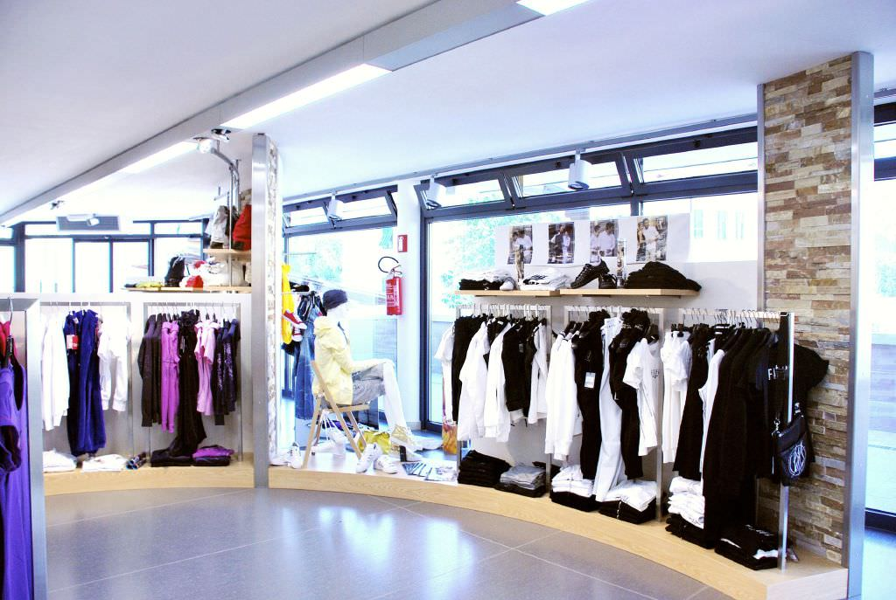
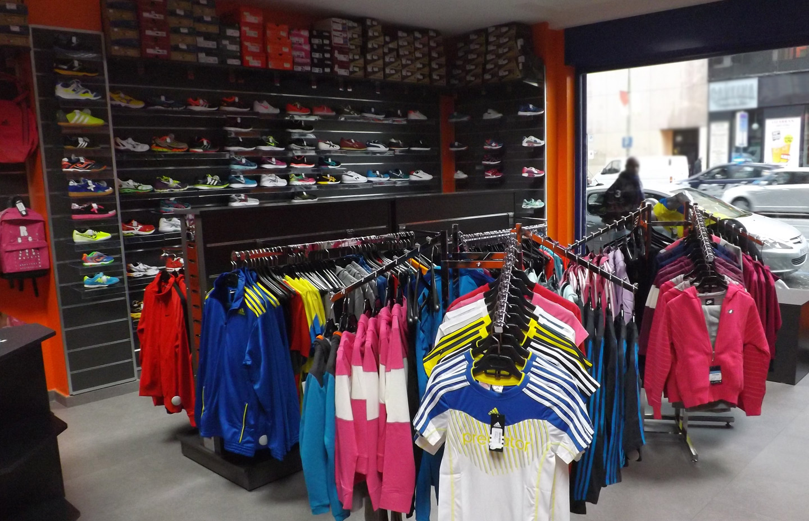
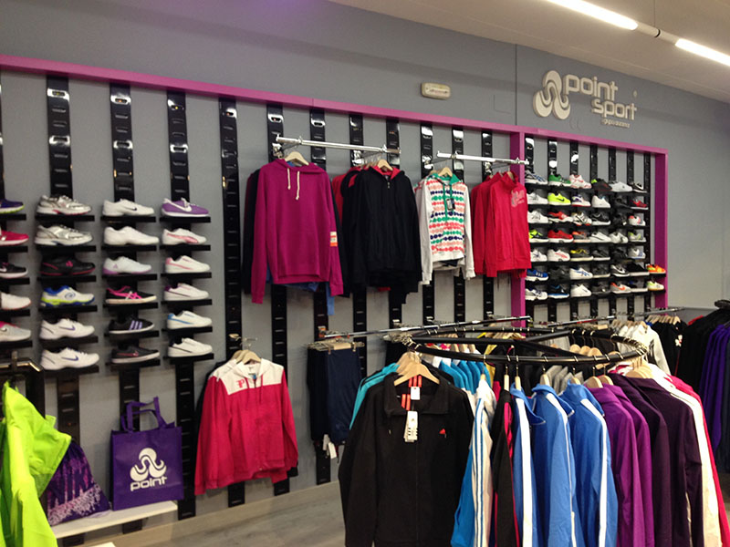
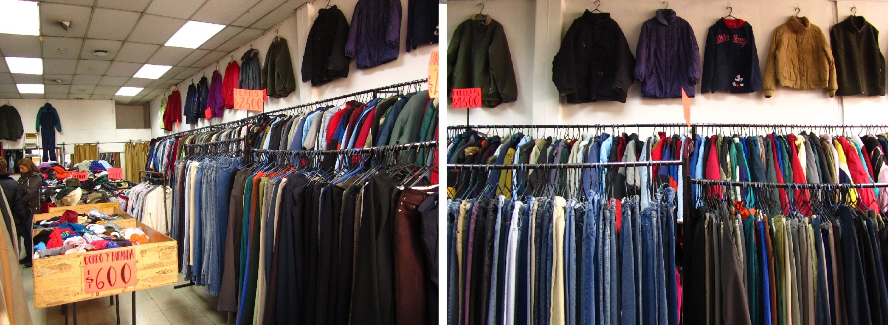

OBJETIVOS DE LA EMPRESA

-
- Servir a la sociedad en un gran extenso y sutido de ropa para toda la familia con distintos gustos.
-
- Ofrecer ropa de mejor calidad satisfaga las necesidades y gustos del mercado potencial, vender ropa a la moda que cumpla con los requerimientos de estilo en el segmento del mercado.
-
- Ofrecer un buen trato con amabilidad y paciencia a nuestros clientes frecuentes, nuestra prioridad son los clientes.

-
- Fabricación de ropa para dama de acuerdo a las tendencias de temporada, con losmejores materiales.
-
- Contar con una administración eficiente que les permita optimizar el uso de sus recursos para poder posicionarse en el mercado como líderes en preferencia del consumidor.
-
- Obtener un amplio grupo de clientes.
-
- Satisfacción al cliente.

-
- Ser reconocido en el mercado nacional.
-
- Crecimiento empresarial.
